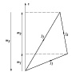

DLMF
Index
Notations
Search
Help?
Citing
Customize
Annotate
UnAnnotate
About the Project
Chapter 34
3
⁢
j
,
6
⁢
j
,
9
⁢
j
Symbols
L. C. Maximon
Center for Nuclear Studies, Department of Physics, The George Washington University, Washington, D.C.
ⓘ
Notes:
The main references used in writing this chapter are
Edmonds (
1974
)
,
Varshalovich
et al.
(
1988
)
, and
de-Shalit and Talmi (
1963
)
.
Referenced by:
§16.24(iii)
,
§16.4(iii)
,
§16.7
,
New Associate Editors for the DLMF
,
Profile
Joris Van der Jeugt
,
Profile
Leonard C. Maximon
,
Profile
Leonard C. Maximon
,
§
‣
Chapter Authors
,
§
‣
Associate Editors
,
§
‣
Associate Editors
,
Erratum (V1.1.6) for ChaptersÂ
10
Bessel Functions
,
18
Orthogonal Polynomials
,
34
3
j
, 6
j
, 9
j
Symbols
,
Organization and Objective
,
§
‣
Software Cross Index
Permalink:
http://dlmf.nist.gov/34

Notation
34.1
Special Notation
Properties
34.2
Definition:
3
⁢
j
Symbol
34.3
Basic Properties:
3
⁢
j
Symbol
34.4
Definition:
6
⁢
j
Symbol
34.5
Basic Properties:
6
⁢
j
Symbol
34.6
Definition:
9
⁢
j
Symbol
34.7
Basic Properties:
9
⁢
j
Symbol
34.8
Approximations for Large Parameters
34.9
Graphical Method
34.10
Zeros
34.11
Higher-Order
3
⁢
n
⁢
j
Symbols
Applications
34.12
Physical Applications
Computation
34.13
Methods of Computation
34.14
Tables
34.15
Software